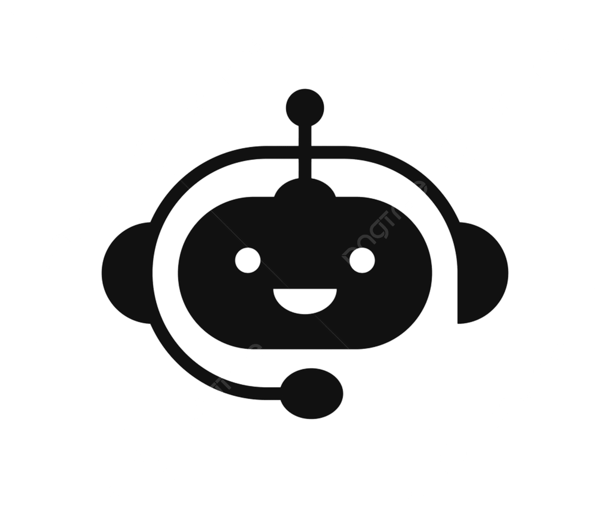

Python
Proficient in Python for data analysis, machine learning, and data manipulation, with hands-on experience using NumPy, Pandas, PyTorch, and TensorFlow..
Passionate about turning data into actionable insights
I recently completed my Master’s in Mathematical Sciences, majoring in Data Science, from the University of Wollongong, Australia. My journey into data science began with a curiosity for solving problems and understanding patterns. Over time, that curiosity grew into a passion for turning raw data into meaningful insights that support smarter decisions. I enjoy working with data, uncovering trends, and using analytical tools to solve real-world challenges. With skills in SQL, Python, Tableau, statistics, and machine learning, I’m excited to begin my professional journey and contribute to data-driven teams.

A short video introduction showcasing my skills, experience, and professional mindset.
Proficient in Python for data analysis, machine learning, and data manipulation, with hands-on experience using NumPy, Pandas, PyTorch, and TensorFlow..
Experienced with joins, queries, data cleaning, and reporting.
Built predictive models using classification, regression techniques and worked with treebased models such as XGBoost, CatBoost.
Used for statistical analysis, data expolration, modeling, and visualization.
Created interactive dashboards and data storytelling visuals.
Transforming complex data into clear actionable insights.
Professional certifications and completed courses that strengthen my technical and analytical skills.

Completed professional training covering data cleaning, analysis, visualization, and SQL.

Applied my R programming skills to analyse a retail transaction dataset for the Quantium Virtual Internship.I identified the most suitable location for a new store and avaluated chip sales trends to uncover the best performing products and customer segments.

Developed an interactive Shakespeare-focused chatbot using Python, Natural Language Processing, and Retrieval-Augmented Generation techniques. The application converts user queries into semantic embeddings and uses a FAISS vector index to retrieve the most relevant Shakespearean quotations from a processed dataset. A Streamlit interface provides users with a simple way to search themes such as love, ambition, betrayal, and friendship through natural-language queries.
a
Performed an exploratory data analysis and machine learning based assessment of healthcare claims to identify patterns associated with potentially fradulent claims.